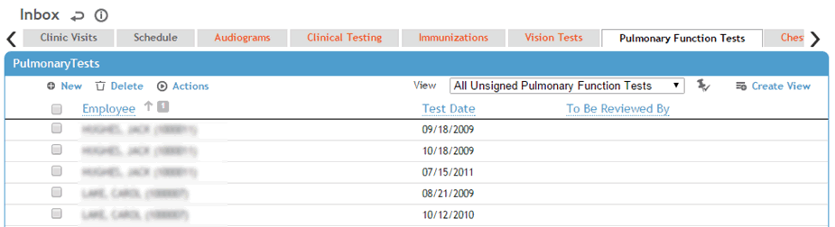

The default view of this list displays all pulmonary function tests that have not been signed. The To Be Reviewed By column is filtered by the user's default practitioner. For more information, see Entering Pulmonary Function Test Results.
To view a particular pulmonary function test, click the employee name link.

If you are the user identified as the Reviewer in the test, you can sign the note (choose Actions»Sign and enter your login password if prompted). A signed note is locked from further edits.